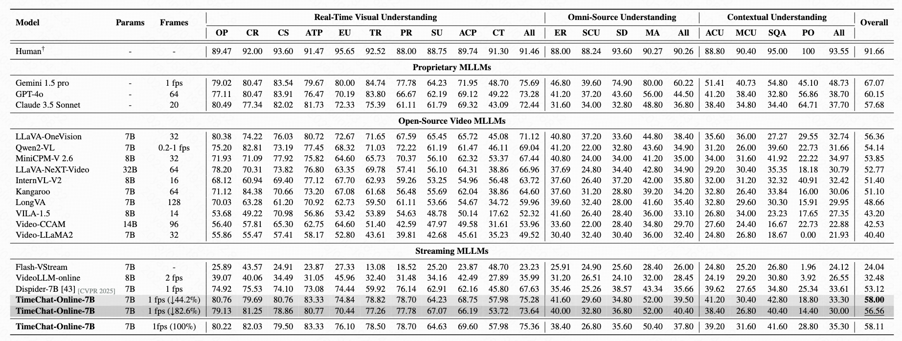
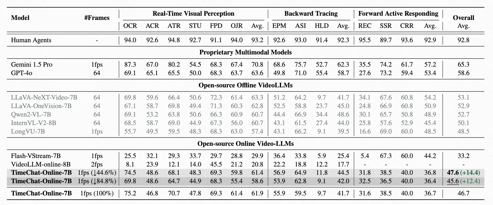
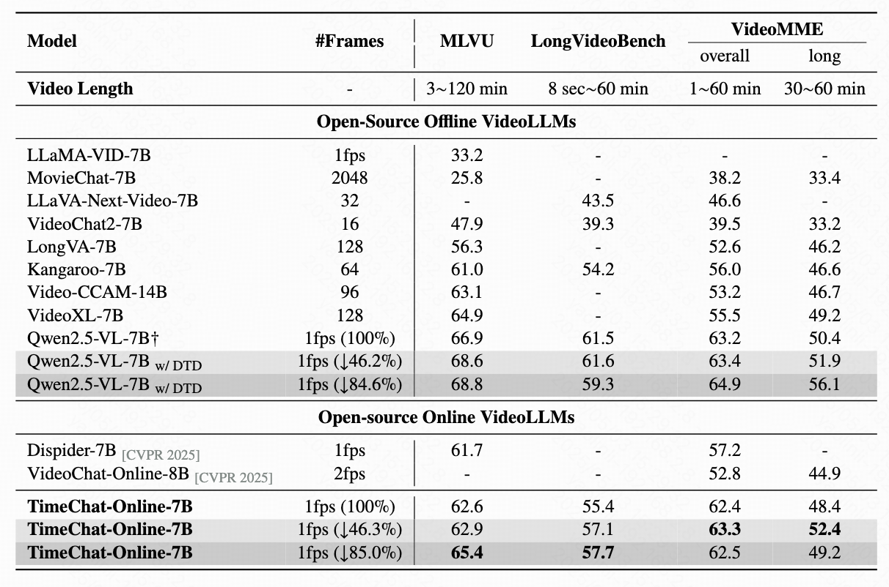

We conduct comprehensive experiments on both streaming video benchmarks (StreamingBench and OVO-Bench) and offline long-form video benchmarks (MLVU, LongVideoBench, VideoMME) to validate the effectiveness of TimeChat-Online.
Performance on StreamingBench
On StreamingBench, TimeChat-Online achieves 56.56% accuracy with 82.6% token reduction, demonstrating state-of-the-art performance among online and offlineVideoLLMs. This significant token reduction of over 80% while maintaining high accuracy confirms that streaming videos contain substantial natural redundancy that can be effectively filtered.

Table 1: Performance comparison on StreamingBench full set including three categories: Real-Time Visual Understanding, Omni-
Source Understanding and Contextual Understanding.
Evaluation on OVO-Bench
TimeChat-Online significantly outperforms existing online VideoLLMs across real-time perception, backward tracing, and forward responding tasks on OVO-Bench.

Table 2: Evaluation results on OVO-Bench comprising three categories: i) Real-Time Visual Perception (OCR: Optical Character Recognition, ACR: Action Recognition, ATR: Attribute Recognition, STU: Spatial Understanding, FPD: Future Prediction, OJR: Object Recognition), ii) Backward Tracing (EPM: Episodic Memory, ASI: Action Sequence Identification, HLD: Hallucination Detection), and iii) Forward Active Responding (REC: Repetition Event Count, SSR: Sequential Steps Recognition, CRR: Clues Reveal Responding).
Results on Offline Long Video Benchmarks
Compared with existing online VideoLLMs, TimeChat-Online achieves superior performance on all long video benchmarks. It achieves up to 85.0% reduction in video tokens while maintaining or even improving performance across long-form video benchmarks. This demonstrates the effectiveness of our DTD approach for both streaming and offline video tasks.
When integrated with Qwen2.5-VL-7B without training, our DTD module improves VideoMME (long subset) accuracy by 5.7 points while reducing 84.6% of video tokens.
Notably, higher token drop ratios consistently enhance performance, indicating that substantial vision redundancy in long videos can be eliminated to improve efficiency and understanding capabilities.

Table 3: Results on offline long video benchmarks. We report the accuracy on the MLVU, LongVideoBench and VideoMME(w/o subtitles). † indicates the reproduced results.